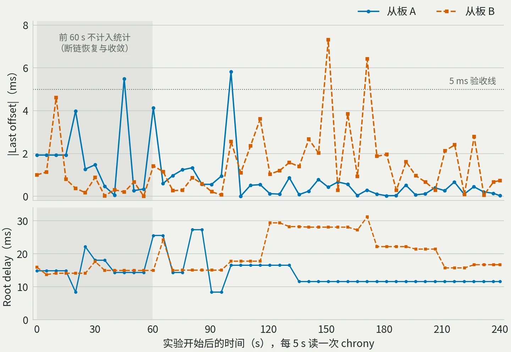

多 X5 蓝牙配对与对时
多块 RDK X5 开发板靠近后经蓝牙自动组网，并对齐系统时间。第一种方案在蓝牙 PAN（个人局域网）上跑 NTP（网络时间协议），板间偏差 P95 为 4–6 ms；第二种方案让两块板读取同一条蓝牙链路的控制器时钟来换算时差，软件自估的偏差 P95 为 57.1 µs。

- 共享蓝牙时钟方案的软件自估偏差 P95
- 57.1 µs
- 相对蓝牙 PAN 上 NTP 的 4–6 ms
- 1/70–1/110
- 目标
- 多块 X5 靠近后自动发现、选主，板间相对时间偏差在 10 ms 以内，进一步尝试 3 ms 以内
- 我做的
- 自动选主与组网程序、三板 PAN + chrony 部署与实板问题修复、共享蓝牙时钟映射程序和两板实验
- 技术栈
- BlueZ · 蓝牙 PAN · chrony（NTP） · HCI Read Clock · L2CAP · Python
- 数据
- 三板 240 秒，每 5 秒读一次 chrony；两板 185 秒，每秒一轮测量
- 关键发现
- NTP 的误差受无线往返时延不对称限制，蓝牙 PAN 上往返时延 8–31 ms，偏差 P95 停在 4–6 ms。共享蓝牙时钟方案不使用报文到达时间，软件自估偏差 P95 降到 57.1 µs，约为前者的 1/70 到 1/110。
- 目前进展
- 实验室原型。微秒级数字是同源软件估计，还没有用独立的共同触发验证；断链恢复 17.5 秒，未达 5 秒目标。
方法一览
| 方法 | 怎么工作 | 需要的条件 | 出处 |
|---|---|---|---|
| PAN + NTP（chrony） | 从板向主板发请求，记录 4 个时间戳（从板发出 t1、主板收到 t2、主板回复 t3、从板收到 t4），估计时差 ((t2−t1)+(t3−t4))/2 和往返时延 (t4−t1)−(t3−t2)。chrony 过滤多次样本后逐步调整本机时钟频率与相位。 | 两板之间有 IP 网络。这里由蓝牙 PAN 提供：主板作 NAP（网络接入点），从板通过 BNEP（蓝牙网络封装协议）获得网卡。假设去程与回程时延相等。 | NTP（RFC 5905）；chrony 4.2 |
| 共享蓝牙时钟映射 | 经典蓝牙（BR/EDR）连接中，从端控制器跟随主端的 28 位时钟，每 tick 312.5 µs。两板各自读这个时钟并记下读钟时的系统时间，把各自系统时间换算到同一个 tick，相减得到时差。 | 两板之间保持一条经典蓝牙 ACL 连接（异步无连接链路，蓝牙的数据链路），主从角色固定；控制器支持 HCI（主机控制器接口）的 Read Clock 命令。 | 蓝牙核心规范 HCI Read Clock 命令；读钟经 BlueZ 的 hci_read_clock |
| 共同 GPIO 触发（计划） | 同一个电信号同时接到两块板的 GPIO（通用输入输出引脚），两板各自记录中断到达的系统时间，差值就是真实板间偏差。 | 两板之间的物理接线，时间戳在中断里取。 | — |
文中的统计量：Last offset 是 chrony 最近一次测得的本机与时间源之差；RMS offset 是其长期均方根；Root delay 是到参考时钟的往返时延；P95 是 95% 的样本不超过的值；ppm 是百万分之一，1 ppm 的频率误差每秒累积 1 µs。
配对、选主与组网
三块板逐对完成数字比较配对（两端核对同一个 6 位数后确认）并互设可信。所有板运行同一个程序，不预设主从。程序基于 BlueZ（Linux 官方蓝牙协议栈），每 5 秒做一轮经典蓝牙扫描和选主。
- 发现按设备名识别同类节点，已连接的节点不因扫描漏报而过期，未连接节点保留 30 秒
- 选主按（时钟等级，节点编号）取最小；已与外部时间源同步的板等级为 0，其余为 5；本次三板都是 5，蓝牙地址最小的板当选
- 组网主板注册 BlueZ NAP，地址固定；从板加入 PAN，chrony 把主板设为唯一可信时间源
chrony 对主板时间源使用 prefer trust require。原因来自实测：一块联网的从板同时看到 8 个公网 NTP 服务器，它们与离线主板的读数相差约 0.34–0.37 s。只写 prefer 时，chrony 可能按多数源把主板判成错误源（falseticker）；trust require 明确以主板为本组的时间权威。代价是只保证板间一致，不保证 UTC 绝对时间。
PAN + NTP 的三板结果
一台主板、两台从板。主板用本地时钟作参考（stratum 8，即时间层级），每 5 秒在从板上读一次 chronyc tracking，共 240 秒、49 次。统计窗口事先定为排除前 60 秒，以隔开断链恢复和收敛阶段。


| 指标 | 从板 A | 从板 B |
|---|---|---|
| |Last offset| 中位数 | 0.43 ms | 1.15 ms |
| |Last offset| P95 | 4.13 ms | 6.41 ms |
| |Last offset| 最大值 | 5.82 ms | 7.31 ms |
| ≤ 5 ms 的读数比例（验收要求 ≥ 95%） | 97.3% | 94.6% |
| 窗口结束时 RMS offset | 1.06 ms | 2.28 ms |
| Root delay 中位数（范围） | 11.6 ms（8.4–27.3） | 21.4 ms（15.0–31.2） |
| chrony 单次系统时间修正最大值 | 1.96 ms | 3.82 ms |
| 结束时本机频率修正 / 估计不确定度（Skew） | 6.2 / 30.8 ppm | 22.0 / 77.3 ppm |
NTP 只能测出往返时延，无法知道去程和回程各占多少；两者不相等时，误差最多可达往返时延的一半。蓝牙 PAN 上的往返时延有 8–31 ms，并随无线重传跳变，所以偏差停在毫秒级。从板 B 的往返时延中位数是 A 的近 2 倍，P95 偏差也高 55%。两块板的最大偏差都在 10 ms 目标内，但从板 B 的 ≤5 ms 比例为 94.6%，略低于 95% 的验收线。
映射到同一蓝牙时钟
为达到 3 ms 目标，另做了一轮两板实验。经典蓝牙连接建立后，从端控制器按主端时钟跳频，两端都能读到同一个 28 位时钟值，约 23.3 小时回绕一次。只要两板各自知道“某个 tick 对应本机系统时间几点”，相减就是两板时差，报文在空中传了多久不影响结果。
- 连续读钟 15 次每次在 HCI 调用前后各取一次系统时间，记中点和 tick
- 换算到同一 tick每次读数按 312.5 µs/tick 推到参考 tick，回绕按有符号最短距离处理，取中位数
- 主板发映射经已配对的 L2CAP（蓝牙逻辑链路控制与适配协议）通道发送参考 tick、对应系统时间和离散度
- 从板相减换算到同一 tick 后相减，合格样本送入 chrony
质量控制有三层：单次读钟期间若系统时间与单调时钟的差变化超过 1 ms（说明系统时间被调整），丢弃本批；15 次读数相对中位数的最大偏离称为离散度，任一端超过 2 ms 时整轮不送入 chrony；读钟在进程内保持一个 HCI 套接字，不再每次启动 hcitool，以去掉进程启动带来的时间戳偏差。合格样本通过 chrony 的 SOCK 参考时钟接口提交，并设 6 ms 的不确定度预算，避免 chrony 把软件读钟当作无误差的硬件时间戳。
| 指标 | 结果 |
|---|---|
| 入选 / 拒绝 | 184 / 1 轮 |
| 绝对偏差中位数 | 22.6 µs |
| 绝对偏差 P95 | 57.1 µs |
| 绝对偏差最大值 | 89.4 µs |
| ≥ 3 ms 的轮数 | 0 |
| 两端单轮最大离散度 P95 / 最大值 | 0.302 / 3.251 ms |
| 结束时 chrony Last offset / RMS offset | −2.2 / 4.3 µs |
| 时钟服务重启次数 | 0 |
被拒绝的那一轮离散度为 3.251 ms，超过 2 ms 门限。控制器对读钟精度字段返回 0xffff，即不提供精度保证。
两种方案对比
| PAN + NTP | 共享蓝牙时钟 | |
|---|---|---|
| 板数 | 1 主 + 2 从，一主可带多从（按 7 个活跃从板设计） | 1 主 + 1 从，每对需要一条固定角色的 ACL |
| 时差从哪来 | 报文时间戳，受往返时延不对称影响 | 同一控制器时钟，报文传输时间不参与计算 |
| 主要误差来源 | 往返时延 8–31 ms 的一半 | HCI 调用耗时与 312.5 µs tick 量化，靠 15 次中位数压低 |
| 偏差 P95 | 4.13 / 6.41 ms | 0.057 ms |
| 偏差最大值 | 5.82 / 7.31 ms | 0.089 ms |
| 依赖 | 标准 IP 网络和 chrony，任意硬件可用 | 控制器正确实现 Read Clock；无精度保证 |
| 验证状态 | chrony 自估，240 秒 | 同源自估，185 秒 |
两种方案的数字都不是独立测量。共享时钟方案的 offset 和 chrony 的反馈都来自同一套读钟，二者不能互相验证，因此 57.1 µs 只说明这套映射在 185 秒内自洽、稳定，不能当作真实物理偏差的上限。
实板问题与修复
| 现象 | 原因 | 修复 |
|---|---|---|
| 首次配对后从板连不上 NAP | 配对时主板还没注册 NAP，SDP（服务发现协议）缓存里没有这项服务 | 用 BlueZ 的定向 ConnectProfile 补做一次服务发现 |
| 选主反复切换 | 已连接节点不再回报信号强度，被当成离开 | 已连接节点不过期；未连接节点至少保留 30 秒 |
| chrony 样本被周期性清空 | 从板每轮重建 PAN | 复用已有 PAN；主从切换时才清除旧主地址和本地参考 |
| 两块从板同时接入时失败 | 双方同时发起连接（page 碰撞），加密后再切换主从角色失败 | 主板主动保持到可信从板的 SDP 连接，让主板先成为连接主端；从板等这条连接建立后再接 PAN |
| 联网从板不跟随主板 | 公网 NTP 源与离线主板相差约 0.35 s | 主板时间源设为 prefer trust require |
| 两块裸板日期停在 2000 年 | 离线启动，系统时间未初始化 | 采集前经串口粗略初始化日期，再让 chrony 收敛 |
验收差距与下一步
| 标准 | 当前结果 | 状态 |
|---|---|---|
| 95% 的 |Last offset| ≤ 5 ms（PAN） | 从板 A 97.3%，从板 B 94.6% | B 未达 |
| 最大稳定态偏差 ≤ 10 ms | 5.82 / 7.31 ms | 达到 |
| 进入范围或断链后 5 秒内恢复时间源 | 从板断链后 17.5 秒自动恢复 PAN | 未达 |
| 连续 30 分钟、高 CPU 负载、遮挡 | 只测了 240 秒和 185 秒 | 未做 |
| 板间 ≤ 3 ms（共享时钟） | 自估最大 89.4 µs，无独立测量 | 待独立验证 |
- 独立验证。给两块板接共同 GPIO 触发，各自记录中断时间，测真实偏差。
- 只保证相对时间。离线主板没有外部 UTC 源。